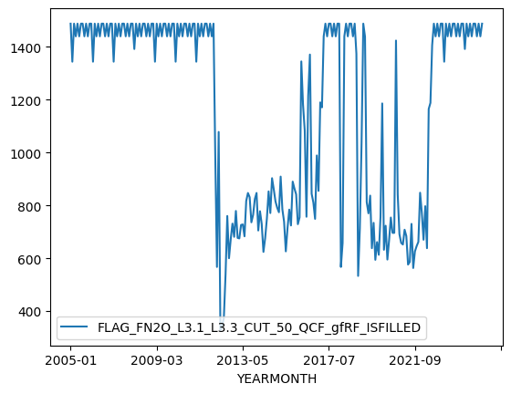
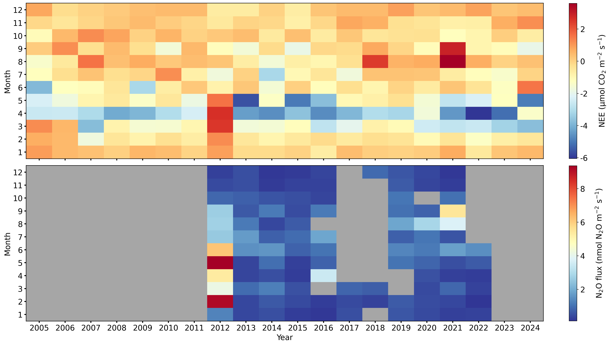

Flux: Monthly heatmaps of NEE (2005-2024) and FN2O (2012-2022)#
Author: Lukas Hörtnagl (holukas@ethz.ch)
Imports#
import importlib.metadata
import warnings
from datetime import datetime
from pathlib import Path
import pandas as pd
import matplotlib.pyplot as plt
import matplotlib.gridspec as gridspec
from matplotlib.colors import LinearSegmentedColormap
import diive as dv
from diive.core.io.files import load_parquet
warnings.filterwarnings(action='ignore', category=FutureWarning)
warnings.filterwarnings(action='ignore', category=UserWarning)
version_diive = importlib.metadata.version("diive")
print(f"diive version: v{version_diive}")
diive version: v0.87.0
Load data#
SOURCEDIR = r"../80_FINALIZE"
FILENAME = r"81.1_FLUXES_M15_MGMT_L4.2_NEE_GPP_RECO_LE_H_FN2O_FCH4.parquet"
FILEPATH = Path(SOURCEDIR) / FILENAME
df = load_parquet(filepath=FILEPATH)
df
Loaded .parquet file ..\80_FINALIZE\81.1_FLUXES_M15_MGMT_L4.2_NEE_GPP_RECO_LE_H_FN2O_FCH4.parquet (3.557 seconds).
--> Detected time resolution of <30 * Minutes> / 30min
| .PREC_RAIN_TOT_GF1_0.5_1_MEAN3H-12 | .PREC_RAIN_TOT_GF1_0.5_1_MEAN3H-18 | .PREC_RAIN_TOT_GF1_0.5_1_MEAN3H-24 | .PREC_RAIN_TOT_GF1_0.5_1_MEAN3H-6 | .SWC_GF1_0.15_1_gfXG_MEAN3H-12 | .SWC_GF1_0.15_1_gfXG_MEAN3H-18 | .SWC_GF1_0.15_1_gfXG_MEAN3H-24 | .SWC_GF1_0.15_1_gfXG_MEAN3H-6 | .TS_GF1_0.04_1_gfXG_MEAN3H-12 | .TS_GF1_0.04_1_gfXG_MEAN3H-18 | .TS_GF1_0.04_1_gfXG_MEAN3H-24 | .TS_GF1_0.04_1_gfXG_MEAN3H-6 | .TS_GF1_0.15_1_gfXG_MEAN3H-12 | .TS_GF1_0.15_1_gfXG_MEAN3H-18 | .TS_GF1_0.15_1_gfXG_MEAN3H-24 | ... | GPP_NT_CUT_50_gfRF | RECO_DT_CUT_50_gfRF | GPP_DT_CUT_50_gfRF | RECO_DT_CUT_50_gfRF_SD | GPP_DT_CUT_50_gfRF_SD | G_GF1_0.03_1 | G_GF1_0.03_2 | G_GF1_0.05_1 | G_GF1_0.05_2 | G_GF4_0.02_1 | G_GF5_0.02_1 | LW_OUT_T1_2_1 | NETRAD_T1_2_1 | PPFD_OUT_T1_2_2 | SW_OUT_T1_2_1 | |
|---|---|---|---|---|---|---|---|---|---|---|---|---|---|---|---|---|---|---|---|---|---|---|---|---|---|---|---|---|---|---|---|
| TIMESTAMP_MIDDLE | |||||||||||||||||||||||||||||||
| 2005-01-01 00:15:00 | NaN | NaN | NaN | NaN | NaN | NaN | NaN | NaN | NaN | NaN | NaN | NaN | NaN | NaN | NaN | ... | 0.918553 | 0.093071 | 0.0 | 0.080016 | 0.0 | NaN | NaN | NaN | NaN | NaN | NaN | NaN | NaN | NaN | NaN |
| 2005-01-01 00:45:00 | NaN | NaN | NaN | NaN | NaN | NaN | NaN | NaN | NaN | NaN | NaN | NaN | NaN | NaN | NaN | ... | 0.917972 | 0.092682 | 0.0 | 0.079688 | 0.0 | NaN | NaN | NaN | NaN | NaN | NaN | NaN | NaN | NaN | NaN |
| 2005-01-01 01:15:00 | NaN | NaN | NaN | NaN | NaN | NaN | NaN | NaN | NaN | NaN | NaN | NaN | NaN | NaN | NaN | ... | 0.163001 | 0.093071 | 0.0 | 0.080016 | 0.0 | NaN | NaN | NaN | NaN | NaN | NaN | NaN | NaN | NaN | NaN |
| 2005-01-01 01:45:00 | NaN | NaN | NaN | NaN | NaN | NaN | NaN | NaN | NaN | NaN | NaN | NaN | NaN | NaN | NaN | ... | 0.190890 | 0.093071 | 0.0 | 0.080016 | 0.0 | NaN | NaN | NaN | NaN | NaN | NaN | NaN | NaN | NaN | NaN |
| 2005-01-01 02:15:00 | NaN | NaN | NaN | NaN | NaN | NaN | NaN | NaN | NaN | NaN | NaN | NaN | NaN | NaN | NaN | ... | 0.167042 | 0.092295 | 0.0 | 0.079361 | 0.0 | NaN | NaN | NaN | NaN | NaN | NaN | NaN | NaN | NaN | NaN |
| ... | ... | ... | ... | ... | ... | ... | ... | ... | ... | ... | ... | ... | ... | ... | ... | ... | ... | ... | ... | ... | ... | ... | ... | ... | ... | ... | ... | ... | ... | ... | ... |
| 2024-12-31 21:45:00 | 0.0 | 0.0 | 0.0 | 0.0 | 52.229004 | 52.226300 | 52.226689 | 52.216796 | 3.458828 | 3.150402 | 3.115260 | 3.660897 | 4.335667 | 4.347764 | 4.385967 | ... | -0.334996 | 1.091028 | 0.0 | 0.265808 | 0.0 | NaN | NaN | -9.097370 | -7.880106 | NaN | NaN | 311.167160 | -5.883538 | 0.0 | 0.0 |
| 2024-12-31 22:15:00 | 0.0 | 0.0 | 0.0 | 0.0 | 52.227858 | 52.227986 | 52.224528 | 52.214211 | 3.522570 | 3.187638 | 3.103440 | 3.643396 | 4.338551 | 4.342880 | 4.379524 | ... | -0.310533 | 1.078751 | 0.0 | 0.264327 | 0.0 | NaN | NaN | -9.561669 | -8.172388 | NaN | NaN | 310.079817 | -6.269816 | 0.0 | 0.0 |
| 2024-12-31 22:45:00 | 0.0 | 0.0 | 0.0 | 0.0 | 52.226640 | 52.229837 | 52.222456 | 52.209876 | 3.578745 | 3.230037 | 3.095339 | 3.624025 | 4.343767 | 4.339440 | 4.372636 | ... | -0.225651 | 1.079759 | 0.0 | 0.264447 | 0.0 | NaN | NaN | -10.138718 | -8.527732 | NaN | NaN | 309.604987 | -6.934394 | 0.0 | 0.0 |
| 2024-12-31 23:15:00 | 0.0 | 0.0 | 0.0 | 0.0 | 52.224375 | 52.231151 | 52.221324 | 52.238293 | 3.624160 | 3.278488 | 3.093806 | 3.601135 | 4.350872 | 4.336333 | 4.366082 | ... | -0.558285 | 1.062164 | 0.0 | 0.262373 | 0.0 | NaN | NaN | -10.649611 | -8.871628 | NaN | NaN | 308.812117 | -5.696729 | 0.0 | 0.0 |
| 2024-12-31 23:45:00 | 0.0 | 0.0 | 0.0 | 0.0 | 52.222007 | 52.230632 | 52.222701 | 52.273511 | 3.656167 | 3.331678 | 3.103003 | 3.579020 | 4.360311 | 4.334225 | 4.359530 | ... | -0.317543 | 1.047483 | 0.0 | 0.260688 | 0.0 | NaN | NaN | -10.944774 | -9.138224 | NaN | NaN | 307.372117 | -8.102484 | 0.0 | 0.0 |
350640 rows × 812 columns
# [print(c) for c in df.columns if "FN2O" in c];
NEE#
nee = df['NEE_L3.1_L3.3_CUT_50_QCF_gfRF'].copy()
nee_var = "NEE"
nee_units = r"$\mathrm{\mu mol\ CO_{2}\ m^{-2}\ s^{-1}}$"
nee_zlabel = f"{nee_var} ({nee_units})"
nee
TIMESTAMP_MIDDLE
2005-01-01 00:15:00 0.911990
2005-01-01 00:45:00 0.910926
2005-01-01 01:15:00 1.667542
2005-01-01 01:45:00 1.639653
2005-01-01 02:15:00 1.660211
...
2024-12-31 21:45:00 1.160720
2024-12-31 22:15:00 1.131454
2024-12-31 22:45:00 1.046967
2024-12-31 23:15:00 1.372674
2024-12-31 23:45:00 1.126110
Freq: 30min, Name: NEE_L3.1_L3.3_CUT_50_QCF_gfRF, Length: 350640, dtype: float64
FN2O#
Flux#
fluxcol = 'FN2O_L3.1_L3.3_CUT_50_QCF_gfRF'
fn2o = df[[fluxcol]].copy()
fn2o['YEARMONTH'] = fn2o.index.year.astype(str) + "-" + fn2o.index.month.astype(str).str.zfill(2)
fn2o_var = r"$\mathrm{N_{2}O\ flux}$"
fn2o_units = r"$\mathrm{nmol\ N_{2}O\ m^{-2}\ s^{-1}}$"
fn2o_zlabel = f"{fn2o_var} ({fn2o_units})"
fn2o
| FN2O_L3.1_L3.3_CUT_50_QCF_gfRF | YEARMONTH | |
|---|---|---|
| TIMESTAMP_MIDDLE | ||
| 2005-01-01 00:15:00 | NaN | 2005-01 |
| 2005-01-01 00:45:00 | NaN | 2005-01 |
| 2005-01-01 01:15:00 | NaN | 2005-01 |
| 2005-01-01 01:45:00 | NaN | 2005-01 |
| 2005-01-01 02:15:00 | NaN | 2005-01 |
| ... | ... | ... |
| 2024-12-31 21:45:00 | NaN | 2024-12 |
| 2024-12-31 22:15:00 | NaN | 2024-12 |
| 2024-12-31 22:45:00 | NaN | 2024-12 |
| 2024-12-31 23:15:00 | NaN | 2024-12 |
| 2024-12-31 23:45:00 | NaN | 2024-12 |
350640 rows × 2 columns
Flag#
flagcol = 'FLAG_FN2O_L3.1_L3.3_CUT_50_QCF_gfRF_ISFILLED'
flag_fn2o = df[flagcol].copy()
flag_fn2o = flag_fn2o.fillna(1)
flag_fn2o.loc[flag_fn2o > 1] = 1 # Some locations have flag values > 1 due to MDS gap-filling
flag_fn2o = pd.DataFrame(flag_fn2o)
flag_fn2o['YEARMONTH'] = flag_fn2o.index.year.astype(str) + "-" + flag_fn2o.index.month.astype(str).str.zfill(2)
flag_fn2o = flag_fn2o.groupby('YEARMONTH').sum()
flag_fn2o.plot(x_compat=True);
flag_fn2o
| FLAG_FN2O_L3.1_L3.3_CUT_50_QCF_gfRF_ISFILLED | |
|---|---|
| YEARMONTH | |
| 2005-01 | 1488.0 |
| 2005-02 | 1344.0 |
| 2005-03 | 1488.0 |
| 2005-04 | 1440.0 |
| 2005-05 | 1488.0 |
| ... | ... |
| 2024-08 | 1488.0 |
| 2024-09 | 1440.0 |
| 2024-10 | 1488.0 |
| 2024-11 | 1440.0 |
| 2024-12 | 1488.0 |
240 rows × 1 columns

Merge gap-fill counts#
# Rename the flag column in _df for clarity after merging
flag_fn2o = flag_fn2o.rename(columns={'FLAG_FN2O_L3.1_L3.3_CUT_50_QCF_gfRF_ISFILLED': 'GapFillCount'})
# Merge fn2o with flag_fn2o to bring the monthly gap-fill counts into fn2o's DataFrame
# We'll merge on 'YEARMONTH'
fn2o_merged = pd.merge(fn2o, flag_fn2o, on='YEARMONTH', how='left')
# Restore the original TIMESTAMP_MIDDLE as index and drop the helper YEARMONTH column
fn2o_merged = fn2o_merged.set_index(fn2o.index)
fn2o_merged = fn2o_merged.drop(columns=['YEARMONTH'])
# Filter the flux data based on the 'GapFillCount'
# Keep flux data only where 'GapFillCount' is less than 1000
fn2o_filtered = fn2o_merged[fn2o_merged['GapFillCount'] < 1300]
fn2o_final = fn2o_filtered[fluxcol] # Use fn2o.name to get the original column name
fn2o_final = fn2o_final.reindex(fn2o.index)
fn2o_final
TIMESTAMP_MIDDLE
2005-01-01 00:15:00 NaN
2005-01-01 00:45:00 NaN
2005-01-01 01:15:00 NaN
2005-01-01 01:45:00 NaN
2005-01-01 02:15:00 NaN
..
2024-12-31 21:45:00 NaN
2024-12-31 22:15:00 NaN
2024-12-31 22:45:00 NaN
2024-12-31 23:15:00 NaN
2024-12-31 23:45:00 NaN
Freq: 30min, Name: FN2O_L3.1_L3.3_CUT_50_QCF_gfRF, Length: 350640, dtype: float64
Heatmap#
fig = plt.figure(facecolor='white', figsize=(17.6, 9.9), layout="constrained", dpi=300)
gs = gridspec.GridSpec(2, 1, figure=fig) # rows, cols
# gs.update(wspace=0.5, hspace=0.3, left=0.03, right=0.97, top=0.97, bottom=0.03)
ax1 = fig.add_subplot(gs[0, 0])
ax2 = fig.add_subplot(gs[1, 0])
settings = dict(ax_orientation='horizontal', cb_digits_after_comma=0, show_values=False)
dv.heatmapyearmonth(ax=ax1, series=nee, agg='mean', zlabel=nee_zlabel, **settings).plot()
dv.heatmapyearmonth(ax=ax2, series=fn2o_final, agg='mean', zlabel=fn2o_zlabel, color_bad='#a6a6a6', **settings).plot()
ax1.set_xlabel("")
ax1.set_xticklabels("")
ax1.set_title("")
ax2.set_title("")
fig.show()

Save figure to file#
fig.savefig('FLUX_NEE_FN2O_MonthlyHeatmaps_Figure1.png', dpi=300)
End of notebook#
dt_string = datetime.now().strftime("%Y-%m-%d %H:%M:%S")
print(f"Finished. {dt_string}")
Finished. 2025-07-01 16:43:59